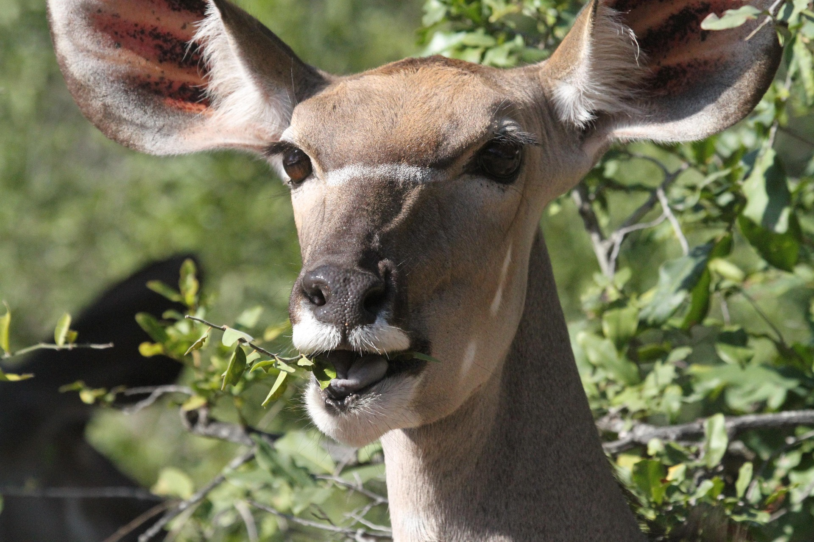
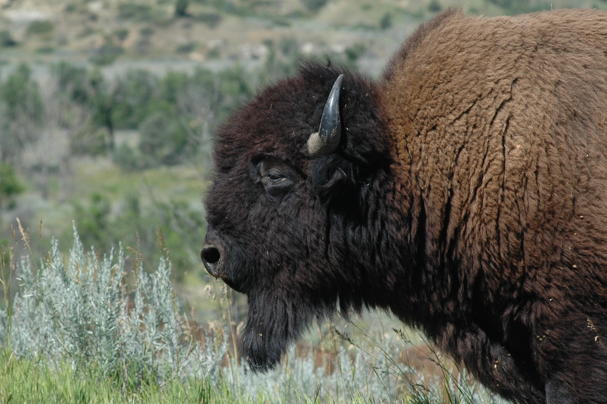
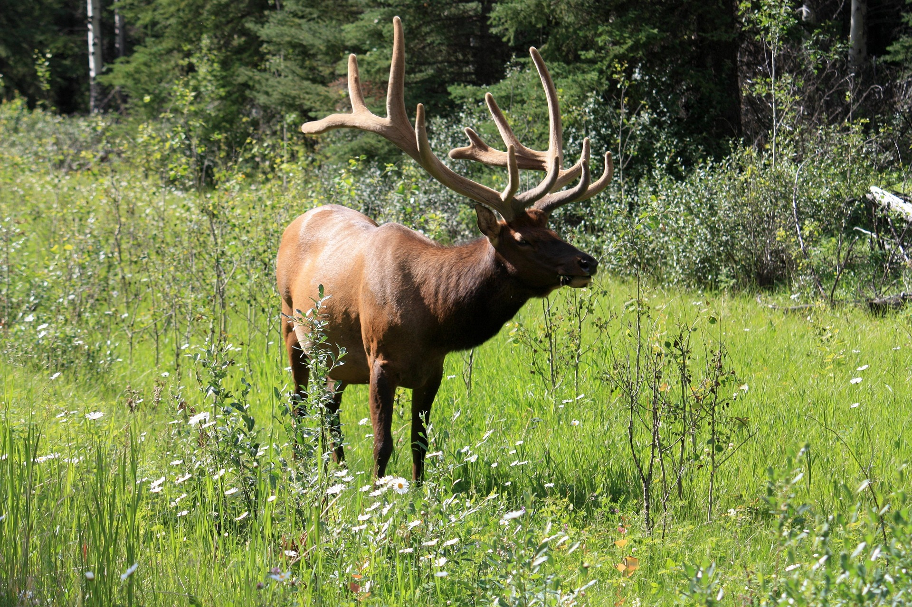

About the Park:
History
The National Park was established in 1950 to protect the diverse flora and fauna of the region.
It has since become one of the most visited natural parks in the country.
Location
The park is located in the northern mountains, surrounded by dense forests and rivers.
Wildlife:
Animals
You can find wolves, deer, foxes, and many bird species here.
Plants
The park is home to rare species of pine trees and wildflowers.
Visitors often enjoy guided walks through the botanical trails.
Visitor Information:
Things to Do
Visitors can hike, camp, and enjoy bird watching. Below is a list of popular activities:
- Mountain hiking
- Camping under the stars
- Guided nature walks
- Wildlife photography


